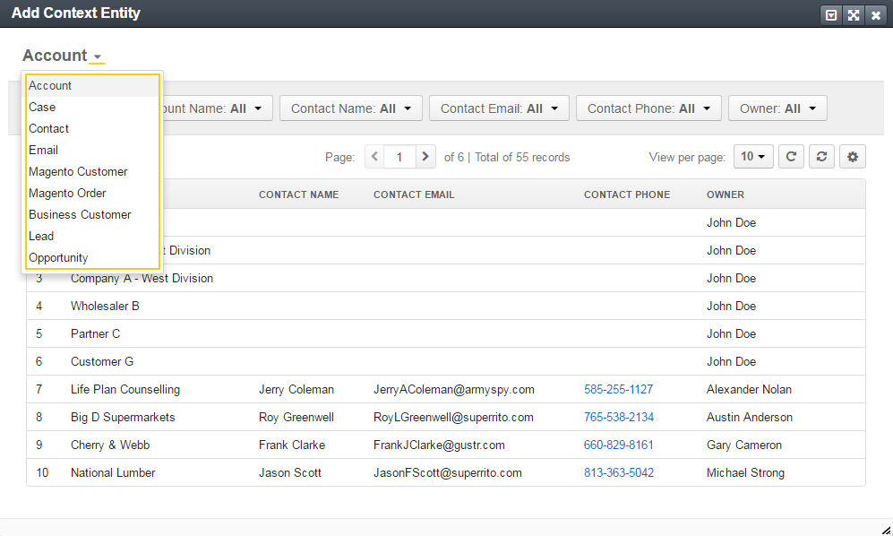
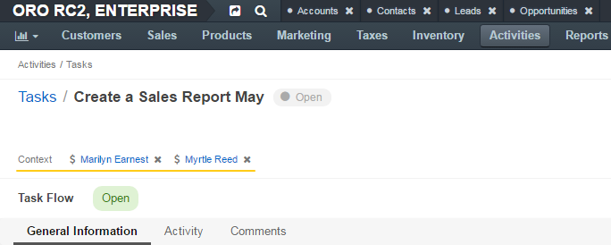
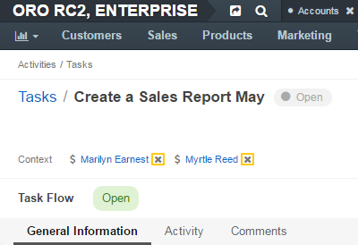

Manage a Task Context¶
Add a Context to an Existing Task¶
From the Task View Page¶
To add a context to an existing task when viewing the task details:
In the main menu, navigate to Activities>Tasks.
On the task list, click the required task.
Alternatively, you can click the More Options menu at the end of the corresponding row and then click the View icon.
On the task view page, click the Add Context button in the upper-right corner of the page.
In the Add Context Entity dialog, select an entity of the related (context) record from the list in the upper-left corner of the dialog.
In the main grid of the dialog, click the required record.
The context record is added and is shown on the task view page under the task name.

During Editing a Task¶
Start editing a task and modify context as required. See the Edit a Task action description.
Remove a Context from a Task¶
From the Task View Page¶
To delete a task’s context when viewing the task details:
In the main menu, navigate to Activities>Tasks.
On the task list, click the required task.
Alternatively, you can click the More Options menu at the end of the corresponding row, and then click the View icon.
On the task view page, under the task name in the upper-left corner of the page, click the x icon next to the context that you want to remove.

During Editing a Task¶
Start editing a task and modify context as required. See the Edit a Task action description.
From the Related Entity View Page¶
Entity records that are specified in the task context have this task displayed in the Activity sections of their view pages.
To remove a task’s context directly from the related entity view page:
On the entity record view page, click Activity.
In the Activity section, click the task that you want to remove context from.
The task details open.
In the task details, click the x icon next to the context that you would like to remove.